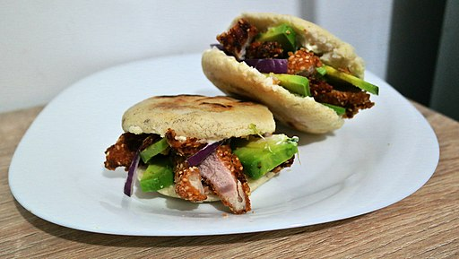
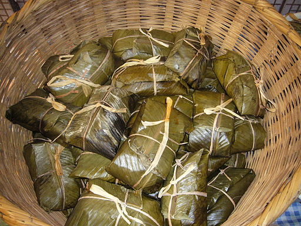

Recetas típicas Caribeñas Ceviche El ceviche es un plato consistente en carne marinada ―pescado, mariscos o ambos― en aliños cítricos.  Arepas La arepa es un alimento de origen precolombino, hecho a base de maíz seco molido o harina de maíz precocida.  Tamal El tamal es un alimento de origen mesoamericano preparado generalmente a base de masa de maíz o de arroz rellena de carnes, vegetales, frutas, salsas y otros ingredientes. Empanadas Una empanada es una fina masa de pan, masa quebrada u hojaldre rellena con una preparación salada o dulce y cocida al horno o frita. Sancocho El sancocho es una sopa hecha con carnes, tubérculos, verduras y condimentos.